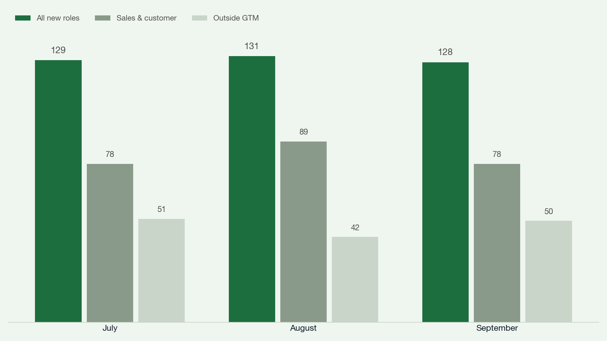
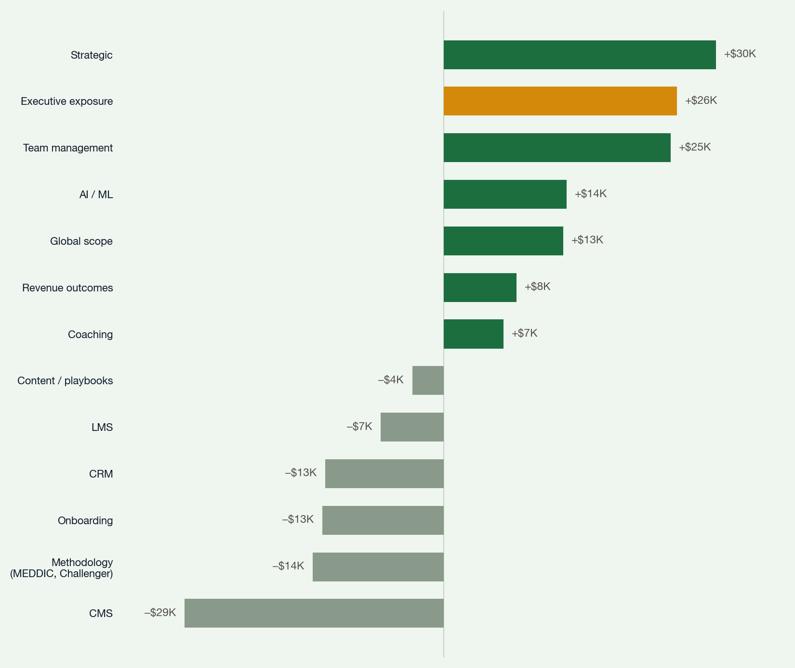
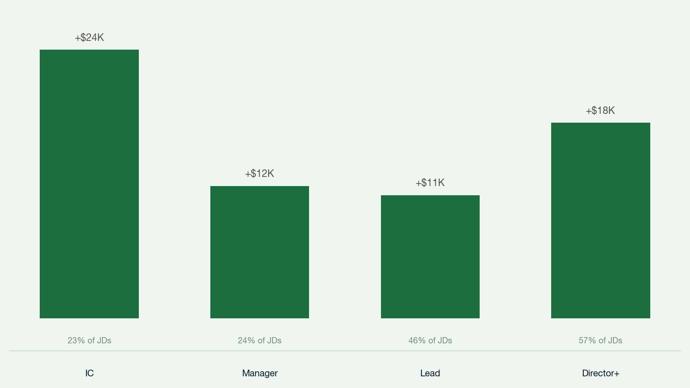
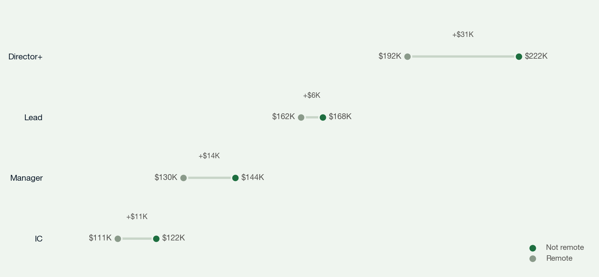

September's jobs report was soft, and white-collar services shed jobs. Enablement hiring held: 128 new roles from companies already in our dataset, in line with July and August. JDs that mention executives carry a +$26K premium, and it stays positive in every seniority band. Remote roles post lower pay, but within the same employer there's no consistent in-office premium.
By Benjamin Bowles · Enablement Index
September payrolls came in at +29K, and revisions to July and August totaled −60K. Professional and business services, the broad white-collar sector, came in at −9K. Information jobs fell for a second straight month (−10K). JOLTS showed openings slipping to 7.1M in August, with quits stuck at 1.9%.
Indeed's sales postings rose +2.4% on the month, though at 92.8 they remain below the pre-pandemic baseline. Counting only companies already in our dataset, new enablement roles came in at 129 in July, 131 in August, and 128 in September.
Across 559 roles listing both comp and full JD text, the largest premiums go to JDs that mention strategy (+$30K), executives (+$26K), or managing a team (+$25K). The largest discount goes to JDs that name a CMS (−$29K).
The broad economy, the sales floor, and the enablement layer above it · September 2026
The labor market softened, sales postings edged up from a low base, and enablement demand held flat.
New roles per month from companies already in the dataset, by function

New enablement roles held between 128 and 131 a month from July through September, while payrolls stalled. Sales and customer enablement made up the larger share every month. Roles outside go-to-market, in HR, engineering, legal, operations, and supply chain, ran at 40%, 32%, and 39% of new roles.
Enablement is a spectrum, and this is one way to slice it. A steady share of the roles sits outside sales. Three months is an early read, and we'll report the series each month.
Same-company base: each month counts only companies with a role in the dataset before that month, so boards added mid-series don't read as new demand. June, when the dataset first loaded every open role, is excluded. Function groups come from title and JD classification: sales and customer covers roles that enable sellers, partners, and customers; outside GTM covers internal workforce enablement and other functions.
Median comp premium by JD signal vs. roles without it · n=559

Strategy (+$30K), executive exposure (+$26K), and team management (+$25K) lead, with AI (+$14K) and global scope (+$13K) behind them. Revenue outcomes (+$8K) and coaching (+$7K) carry smaller premiums.
JDs that name a CMS (−$29K), methodologies like MEDDIC or Challenger (−$14K), onboarding (−$13K), or a CRM (−$13K) pay less than roles that don't.
Premium = median comp for roles whose JD mentions a signal minus median comp for roles whose JD doesn't, across 559 clean roles with listed comp and full JD text. Cross-sectional correlations, not controlled experiments. Many of these signals also track seniority; the next chart holds seniority steady.
Executive exposure premium within each seniority band

Holding seniority steady, JDs that mention executives pay more in all four bands: IC +$24K, Manager +$12K, Lead +$11K, and Director+ +$18K. AI and global scope also pay more in every band, but both dip close to zero somewhere (AI at Manager, +$4K; global scope at Lead, +$4K). Executive exposure has the highest floor.
The mention rises with seniority, from 23% of IC JDs to 57% at Director+. The premium is largest at IC, where fewest JDs mention it.
Executive exposure = JD mentions executives, the C-suite, a CRO, CMO, or CEO, or a VP. Bands control seniority only. A role whose JD mentions executives may differ in other ways too, including company size.
Median comp by seniority, remote vs. not remote · n=559

Remote roles post lower pay at every level, by $6–31K. The gap is widest at the top: a remote Director+ role pays $192K against $222K for one that isn't.
Part of that is geography. 24% of non-remote roles sit in the highest-paying metros, against 6% of remote roles. Outside those metros, the Director+ gap narrows to +$22K and the Lead gap disappears (−$1K), while IC (+$15K) and Manager (+$11K) hold.
The sharper test is the same employer. We found 27 cases where one company posted both a remote and a non-remote role at the same level, across 21 companies. The non-remote role paid more in 12, and the remote role paid the same or more in 15. Within one employer, there's no consistent in-office premium. At Director+, hybrid roles lead at $235K, while fully on-site Directors post $195K, close to remote at $192K.
Work mode classified from JD text and location. "Not remote" includes hybrid, on-site, and city-listed roles where the JD doesn't specify remote; "fully on-site" includes those city-listed roles. Highest-paying metros: San Francisco Bay Area, New York, Seattle, Boston, Los Angeles, and Washington, DC, from the posting's location. Same-employer comparisons use median comp per company and band. Correlations within each band, not proof that the same job pays differently.
Executive exposure has the highest floor of any premium.
JDs that mention executives pay more at every level we measure. JDs that name a content platform pay less, as they did in Issue 03.
In a month when payrolls stalled and white-collar services shed jobs, enablement demand held flat. Counting only companies already in our dataset, 128 new roles opened in September, in line with July and August.
Executive exposure carries a +$26K premium across all levels and stays positive in every seniority band, largest at IC (+$24K). Tool-specific JDs sit at the bottom of the map, led by CMS (−$29K).
Remote roles post lower pay at every level, widest at Director+ (+$31K). Within the same employer there's no consistent in-office premium. The gap tracks who hires remote and where, not where you sit.
The dataset covers 980 postings with "enablement" or related GTM-training titles, listed on public applicant tracking systems (Greenhouse, Lever, Ashby, SmartRecruiters, Workable, Recruitee, Workday, iCIMS) and company career sites, first seen through the end of September 2026. After removing duplicate multi-city postings and engineering or infrastructure roles, 853 made the clean set, and 559 list both compensation and full JD text, forming the analytical sample. Comp is the midpoint of the listed range. Premiums are the median comp of roles whose JD mentions a signal minus the median of roles whose JD doesn't. To hold seniority steady we group roles into four bands (IC, Manager, Lead, Director+) and recompute within each. Monthly counts use a same-company base, counting only companies already in the dataset before that month. These are cross-sectional correlations, not controlled experiments. Market context from BLS, JOLTS, and Indeed Hiring Lab.
Sources: U.S. Bureau of Labor Statistics, Current Employment Statistics. U.S. Bureau of Labor Statistics, Job Openings and Labor Turnover Survey. Indeed Hiring Lab Job Postings Tracker. Enablement Index dataset as of September 2026. Compensation figures reflect salaries listed on postings. n = 980 postings; n = 853 clean roles; n = 559 with listed comp and full JD text.
Q3 quota data arrives, along with a fourth month of new-role counts.